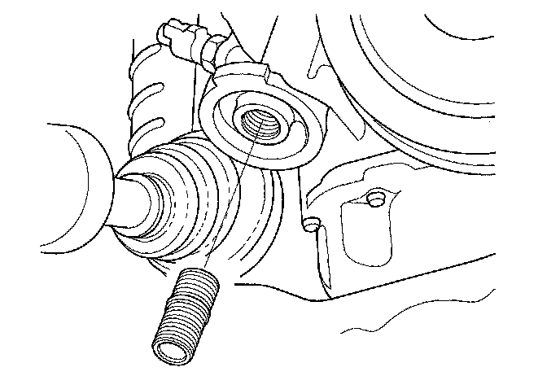
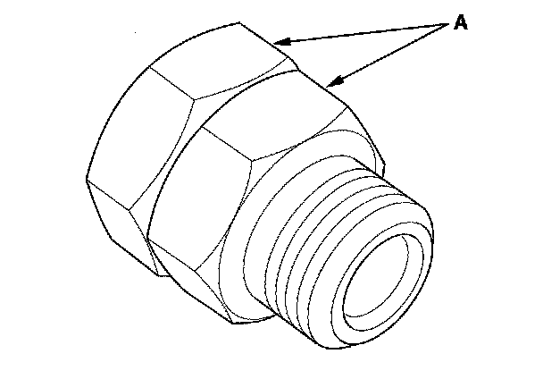

Oil Filter Adapter: Service and Repair
Oil Filter Feed Pipe Replacement1. Remove the oil filter.
2. Remove the oil filter feed pipe.

3. Install two 20 x 1.5 mm nuts (A) onto the new oil filter feed pipe, and hold one nut with a wrench, then tighten the other nut.

4. Tighten the oil filter feed pipe to 49 N-m (5.0 kgf-m, 36 lbf-ft), then remove the nuts from the oil filter feed pipe.